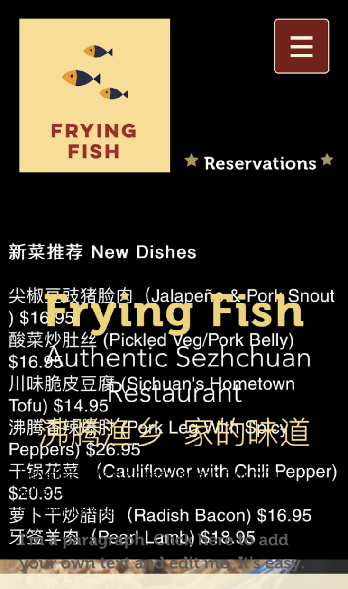
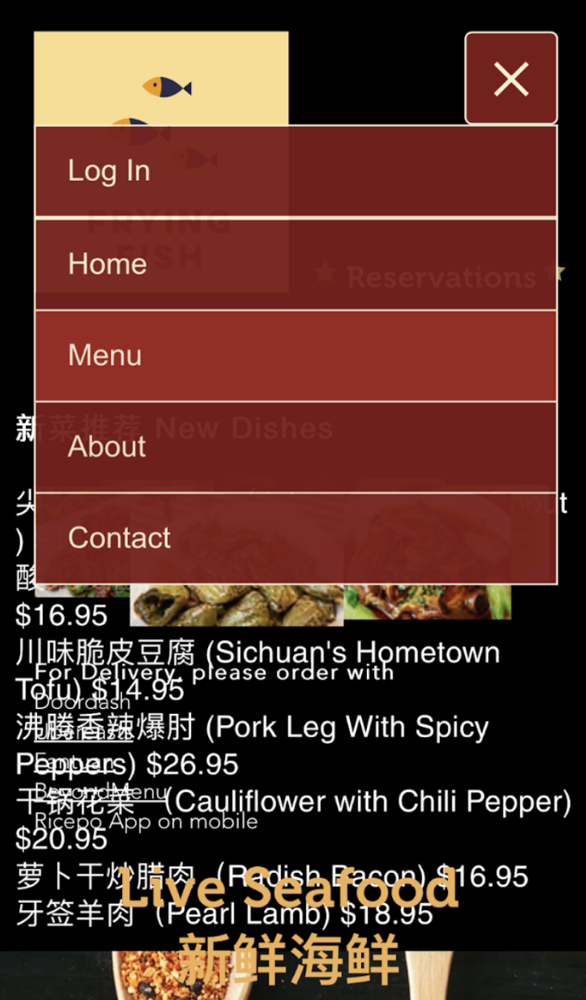
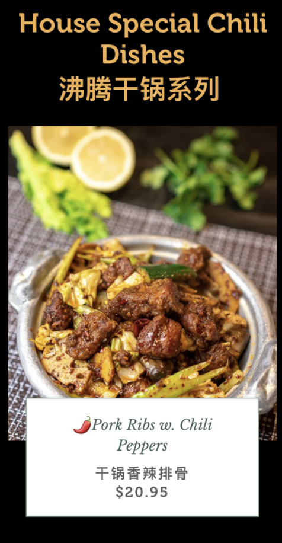
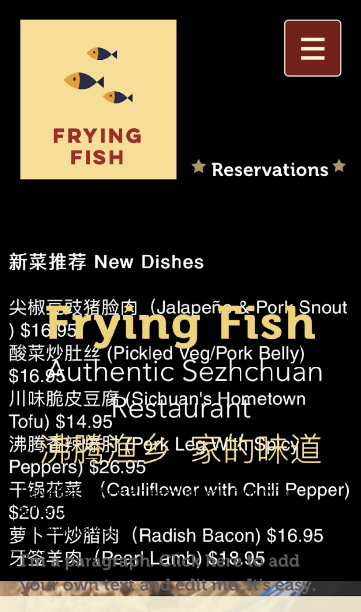
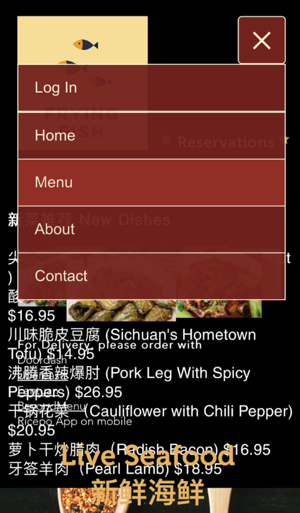
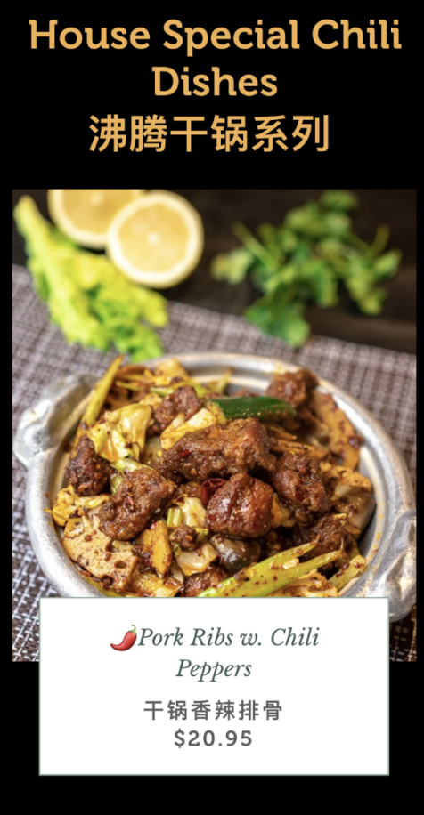
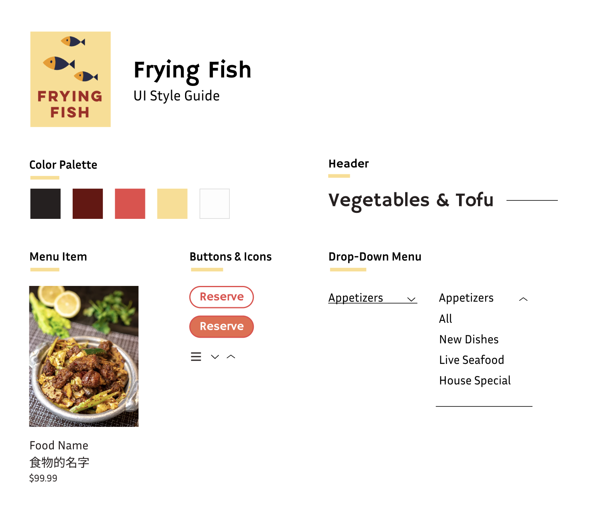
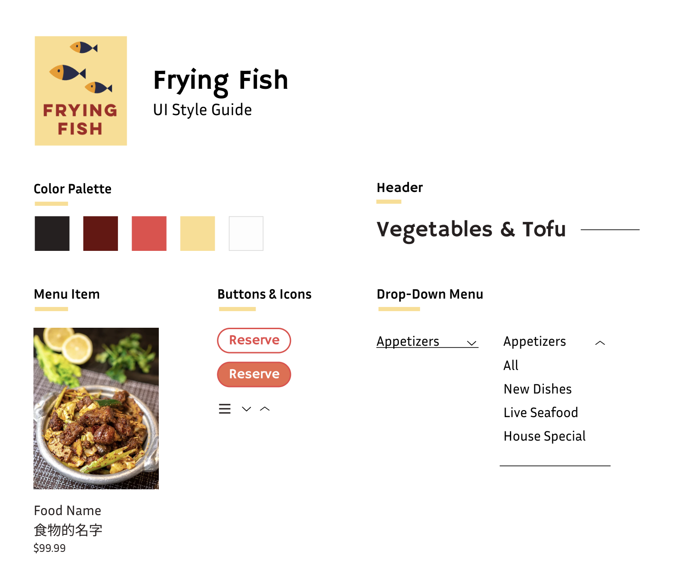

For a class project, I chose to redesign the menu of one of my favorite restaurants. While the food looks delicious, it's difficult to find important information and the website is visually cluttered & confusing with lots of overlapping elements.
To start, I identified several key usability & accessibility issues with the original website:
Evaluating the website with WAVE revealed a significant number of contrast errors and alerts, as well as a broken link. Notably, the WAVE report showed that much of the alt text on the page was uninformative (e.g. “listitem”, “list”, “anchor-label_dataItem-jywe6amv”), which makes the website inaccessible to users who use screen readers.
 





Once I identified the key problems with the original website, I made a series of speed sketches culminating in a final sketch. My goal was to simplify the structure of the menu, so I ditched the slideshow on the original website and used a simple grid for the menu.
I then created and annotated a lo-fi mockup of the revised website with Figma!
 

In the hi-fi stage, I ended up changing a couple of things! Firstly, I decided that having an image as the background of the header was too cluttered since I wanted the focus to be on the menu items, so I removed it. I additionally made the reserve button more prominent.
For the overall style guide, I used the logo of the restaurant as a reference and matched the style with modern, sleek-looking fonts and colors.
Nice! The website is looking much cleaner! :)
Looking back, if I had more time, these are some things I would extend and improve upon:
My redesign can be found at this link!